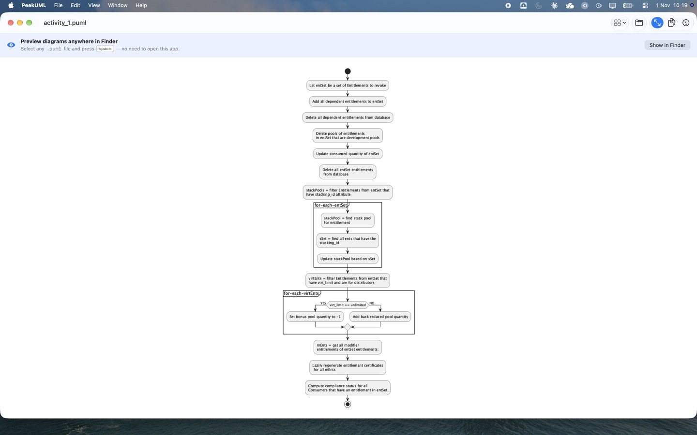

PeekUML Support
See rendered PlantUML diagrams when you press Space in Finder.

Need help? Read the questions below first. If they don't fix it,
open an issue on GitHub.
Say which macOS version you use, and if you can, attach a .puml file that
shows the problem. Remove anything confidential from the file first, because GitHub issues are public.
Getting started
- Install PeekUML from the Mac App Store.
- Open PeekUML once. This tells macOS about the Quick Look extension and the PlantUML file types.
- In Finder, select a
.puml,.plantuml,.iumlor.wsdfile and press Space.
You can also use the PeekUML app as a viewer. Open a file with File › Open or drag it onto the window. Use the Samples menu to see example diagrams, and use Copy to put the rendered diagram on the clipboard.
Troubleshooting
Pressing Space shows plain text or a generic icon
Open PeekUML once, then try again. If the preview still doesn't appear, check that the extension is turned on:
- macOS 15 and later: System Settings › General › Login Items & Extensions. Scroll to Extensions, click the ⓘ next to Quick Look, and turn on PeekUML.
- macOS 13 and 14: System Settings › Privacy & Security › Extensions › Quick Look, then turn on PeekUML.
If it still doesn't work, run these commands in Terminal to reset Quick Look:
qlmanage -r
qlmanage -r cacheIf another app is also set to preview .puml files, macOS may use that app
instead. Remove the other previewer, or contact us so we can look at the conflict.
"cannot include" or undefined macro errors
PeekUML blocks !include on purpose. This covers local files, URLs and the
PlantUML standard library (for example !include <C4/C4_Container>).
Because of this, previewing a file from someone else can't read your other files or connect
to the internet. If a diagram needs included definitions, copy them into the file itself.
The preview shows an error instead of a diagram
PlantUML shows its error message in the preview. Usually this is a syntax error, or the file
is missing its @startuml / @enduml lines. Fix the source and press
Space again.
A large diagram is cut off at the edge
PeekUML can render diagrams up to 16,384 pixels on each side. If a diagram is bigger, it is cut off and the app shows a notice. Split the diagram into smaller ones.
Does PeekUML need Java, Graphviz or an internet connection?
No. The PeekUML app includes a small Java runtime and PlantUML's built-in layout engine. It renders every diagram on your Mac and never connects to the internet.
Contact
For bug reports, feature requests and questions, use GitHub Issues. You need a free GitHub account to post. For refunds, use Apple's Report a Problem page, because the App Store handles all purchases.
Credits
PeekUML renders diagrams with PlantUML, which is used under the MIT License. The app's About window lists the full licence notices.